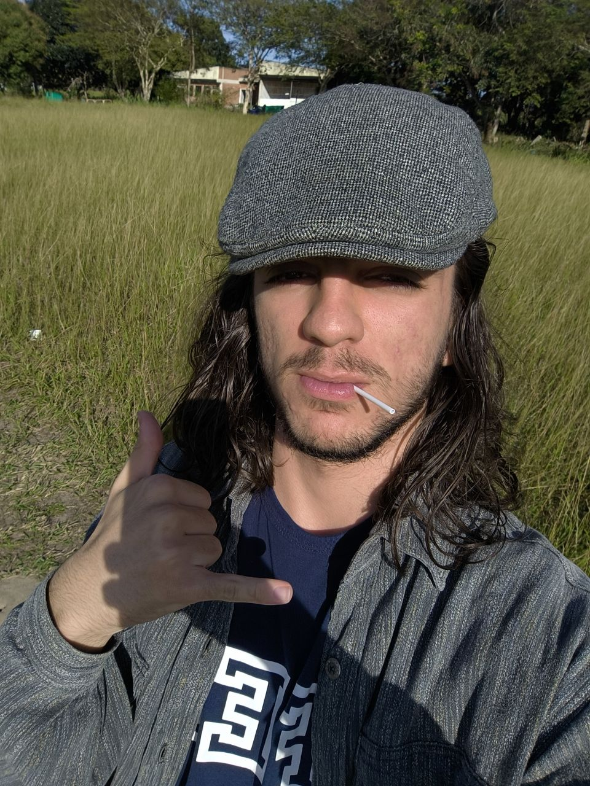

Pedro Lima Depizzol

Email:
generico@gmail.com
Cidade:
Vitória - ES
Data de nascimento:
05/09/2006
1. Formações Acadêmicas:
2022 - 2025 |
Instituto Federal do Espírito Santo
Curso Técnico de Internet das Coisas (IoT)
2026 - 2030 |
Universidade Federal do Espírito Santo
Estatística
2. Formações Complementares:
• Inglês
• Muay Thai
• Curso de Robótica
3. Soft Skills:
•
Seriedade
•
Empatia
•
Pontualidade
Minhas Preferências
Silêncio
← Voltar para o site principal